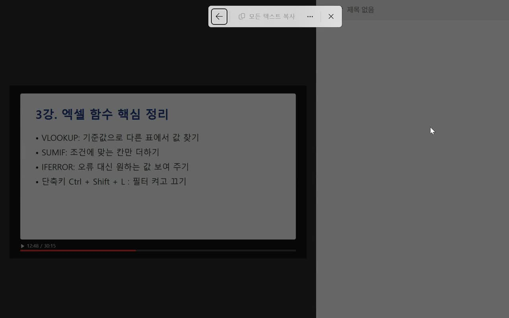

마이크로소프트가 만든 무료 오픈소스 PowerToys를 깔면, 화면 어디서든 Win + Shift + T를 누르고 글자 있는 곳을 드래그하는 것만으로 글자를 복사할 수 있어요. 인강 캡처, 사진, 멈춘 영상, 그림으로 된 PDF까지 돼요.
Microsoft Store에서 'PowerToys'를 검색해 설치하거나, 명령 프롬프트에 아래 '설치' 한 줄을 넣으세요. 설치가 끝나면 PowerToys가 작업 표시줄 오른쪽 아이콘으로 켜져 있어요.
PowerToys 설정을 열고 왼쪽 목록에서 '텍스트 추출기'를 눌러 켜세요. 처음에 꺼져 있는 경우가 있어요. 단축키는 기본으로 Win + Shift + T예요.
글자가 있는 화면에서 Win + Shift + T → 화면이 어두워지면 글자 있는 곳을 드래그 → 글자가 하얗게 표시되면 위 막대의 '모든 텍스트 복사'를 누르세요. 그다음 원하는 곳에 Ctrl + V로 붙여 넣으면 돼요.

휴대폰으로 찍은 종이 공지문·영수증 사진도 PC에서 열어 두고 똑같이 하면 돼요. 조금 기울어져도 읽어요.
명령 프롬프트에 한 줄
winget install Microsoft.PowerToys
글자 복사
Win + Shift + T
도움이 되셨다면
@ai.antenna.kr
에서 바로 쓰는 AI 활용법을 계속 올립니다.